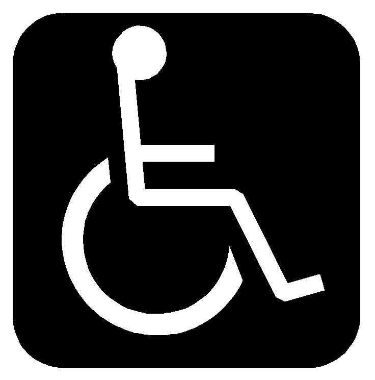

Floor: Basement


 This one means Emergency Exit only.
We have marked some of the least intuitive Emergency Exits in the building. They may seem to be hidden, however once you have seen one of those, it will become easier for You to remember.
This one means Emergency Exit only.
We have marked some of the least intuitive Emergency Exits in the building. They may seem to be hidden, however once you have seen one of those, it will become easier for You to remember.

 These icons show men and womens bathrooms. Some bathrooms are separate and some are unisex. Main bathrooms for the students are marked on the map.
These icons show men and womens bathrooms. Some bathrooms are separate and some are unisex. Main bathrooms for the students are marked on the map.
 This is an easily accessible bathroom. If for some reason You find it difficult to use bathrooms listed above, feel free to use the easy accessible bathroom. The symbol seems to us to be very unfortunate, because the target group is wider than people using a wheelchair, but we have not found anything better.
As you have noticed we have rooms with different letters in front of the room number. Those letters are short for the street name, because each classroom is placed in different building area, which has a neighboring street.
The aim with such marking is to motivate You to get better oriented not only in the school area, but also geographically. Our building, P35, is surrounded by 4 streets:
These streets are included in the rooms marking as two or three symbols or letters:
The “P” means “Paviljong” and it means: pavilion – an area inside the building (PI for Pilestredet is the only exeption).
Let’s look on this closer in an example. You just made it to school and You are standing on the ground floor. If You are looking for example for a room PI-847, than You already know that it’s placed nearest Pilestredet. You are looking that way, toward the cantine. The numbers have also a hint. The first number tells You on which level* the room is placed. So number 8 means the eight level. We strongly recommend the elevator in that case. When You go out the elevator go right. The room is by the sitting area.
* In Norwegian system, all the people from East-Europe and other parts with different level-systems must remember that, the ground floor here equals to the first floor.
Information taken from: student.hioa.no/en/skriveroversikt-pilestredet
The cafeteria on the Ground level offers warm meals and vegetable salad, healthy dinner in other words. Exiting the main entrance of P35 you’ll see Deli de luca on your left in the same building and 7-Eleven on the opposite side of the street.
In case of problems connecting to the Internet, logging onto Fronter or your studnet account seek help and the IT support next to the Info desk.
There is a lot of useful information available, for example at hioa.no or the website of the Teknologi, kunst og design department, at hioa.no/tkd.
The school is open from 6AM to 10PM, remember to have your student ID card with you to have access to the entrance door.